Move from data to intelligence with Oracle MCP and Microsoft IQ
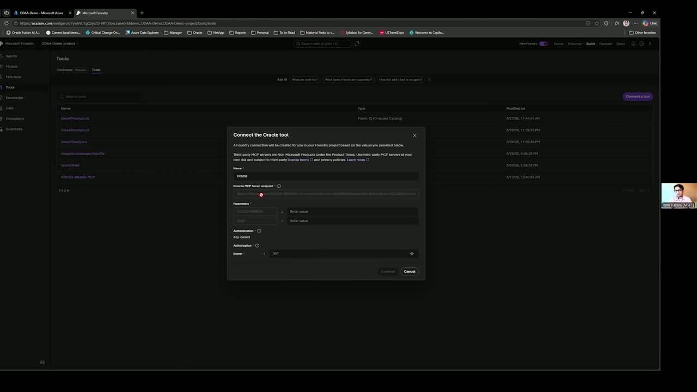
Chapters
Official description
Make the leap from disconnected data to intelligent, AI-driven workflows by combining Oracle managed MCP Servers with Microsoft IQ. See how MCP enables connectivity to Oracle Database@Azure, while Microsoft IQ—Work IQ, Fabric IQ, and Foundry IQ—bring context, reasoning, and orchestration to enterprise data. Together, they power agentic experiences with Oracle handling infrastructure and operations, accelerating time to value, and delivering enterprise-grade solutions at scale.
Summary
Overview
The session demonstrates how Oracle's managed MCP (Model Context Protocol) servers connect Oracle Database@Azure to Microsoft's IQ intelligence layer—Foundry IQ, Fabric IQ, and Work IQ—to build governed, business-aware enterprise agents. Using an accounts-payable scenario, the presenters show an agent reasoning over live Oracle invoice data, grounding against compliance documents, and drafting an email response without ETL or custom connection code.
Key announcements
- Managed, hosted Oracle MCP servers for Oracle Database@Azure (00:03:22m05s
 m10sp05sp10s) — Oracle offers native, managed MCP servers in both Oracle Cloud Infrastructure and for databases running at Azure, with the MCP server itself provided at no additional cost (customers pay only for database and AI tooling usage).
m10sp05sp10s) — Oracle offers native, managed MCP servers in both Oracle Cloud Infrastructure and for databases running at Azure, with the MCP server itself provided at no additional cost (customers pay only for database and AI tooling usage). - MCP servers for Oracle AI Database since July (00:03:17m05sm10s
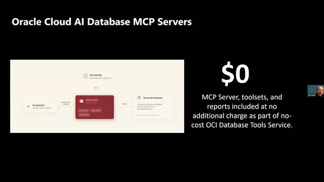
p05s p10s) — Oracle has shipped MCP server support for its AI Database, extending now into cloud-hosted managed offerings.
p10s) — Oracle has shipped MCP server support for its AI Database, extending now into cloud-hosted managed offerings. - End-to-end identity propagation via Entra ID and OAuth 2 (00:06:44
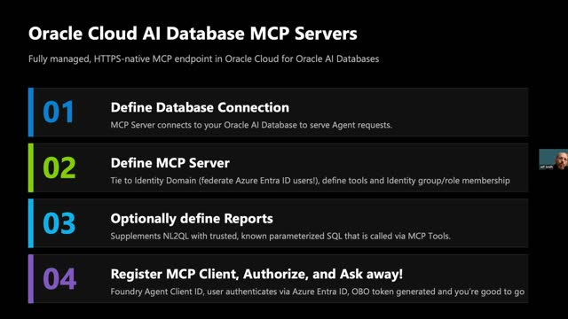
m05sm10s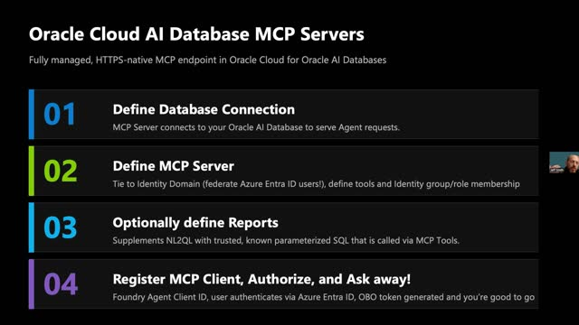
p05s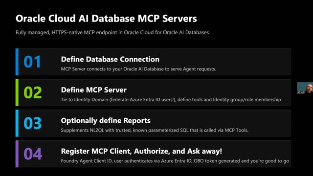
p10s) — A user's Azure Entra ID identity is propagated into the Oracle database itself through an OBO token flow, so the database applies its own security rules to the agent's queries as if the user connected directly.
{kind=link}
{kind=link}
{kind=link}
{kind=link}
{kind=link}
{kind=link}
{kind=link}
{kind=link}
{kind=link}
{kind=link}
Topics covered
- Four-layer architecture: dev surface, intelligence (IQ) layer, Oracle data/Atlas layer, and governance plane.
- Two data-access patterns: Oracle MCP server for live reads versus Fabric Mirroring for historical and cross-source analytics, with the same agent code running either way.
- Configuring an Oracle MCP server: database connection credentials, identity domain, MCP server groups, and MCP tools (including natural-language-to-SQL).
- Registering an agent as an MCP client and the OAuth 2 / OBO authorization workflow.
- Building an accounts-payable analyst agent in Azure AI Foundry and wiring it to Foundry IQ, Work IQ, and Fabric IQ.
- Knowledge bases drawing from compliance reports in Microsoft OneLake and vendor/contract documents in Azure Blob Storage.
- Human-in-the-loop query approval and least-privilege agent identity governance via Entra Agent ID and Agent 365.
Notable quotes
"MCP, so Model Context Protocol, really came onto the scene in late 2024 and caught on like wildfire all throughout 2025." — Jeff Smith
"I like to tell people that you're the actual pilot, not the Copilot." — Jeff Smith
"The agent is talking to your mission critical enterprise data residing in Oracle databases, so you better be conscious about what the agent is accessing, why is it accessing, and what's the outcome of it?" — Ram Kakani
Products and tools mentioned
- Oracle Database@Azure
- Oracle managed MCP Server / Oracle Remote MCP Server
- Microsoft IQ (Foundry IQ, Fabric IQ, Work IQ)
- Azure AI Foundry / Foundry Agent Service
- Copilot Studio
- GitHub Copilot
- Microsoft Entra Agent ID
- Agent 365
- Oracle Autonomous AI Database
- Oracle Exadata Database (including Exascale infrastructure)
- Oracle Base Database Service
- Oracle GoldenGate
- Fabric Mirroring
- Microsoft OneLake
- Azure Blob Storage
- Oracle APEX
- Outlook, Teams, Excel
Speakers featured
- Jeff Smith — Product Manager, Oracle (covers MCP servers for Oracle Database)
- Ram Kakani — Product Manager, Oracle Database@Azure team, Microsoft
Follow-up resources
- LinkedIn community for Oracle Database@Azure users (referenced via on-screen link/QR code)
- Pricing and technical details link (referenced as the third on-screen link/QR code)
- Invitation to schedule a call with Oracle engineers to set up Oracle Database@Azure and MCP servers
- Jeff Smith online via the handle "ThatJeffSmith"
Frames
{kind=link}
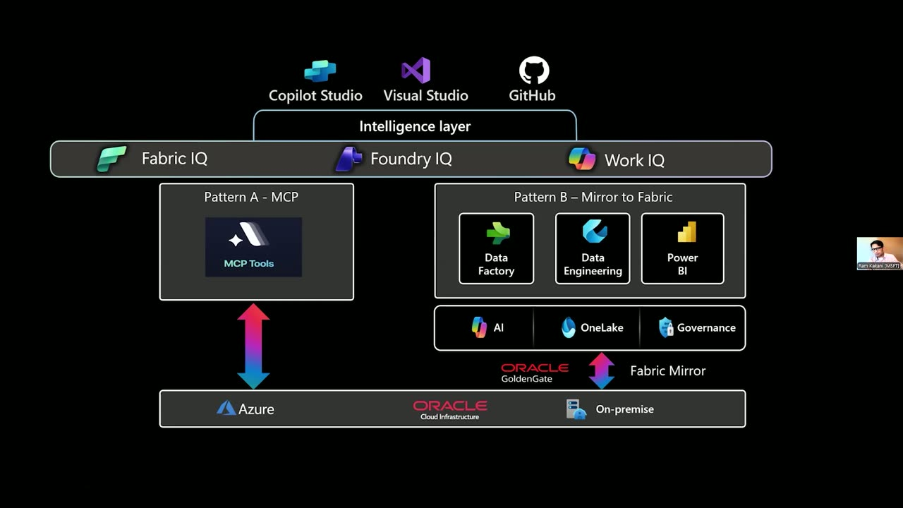
{kind=link}
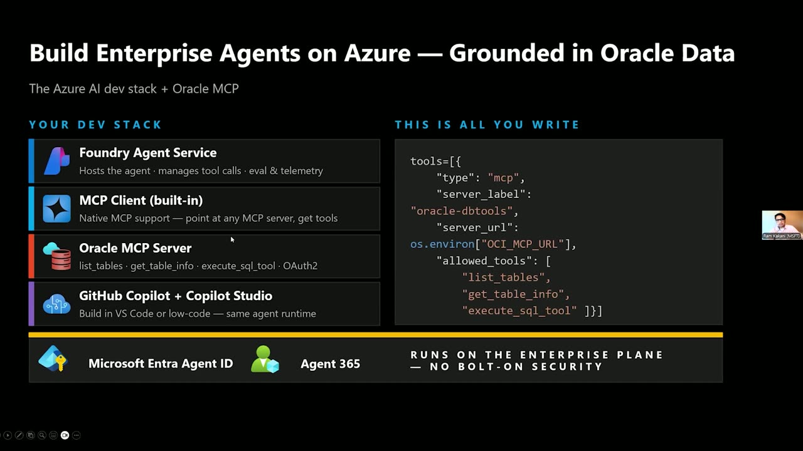
{kind=link}
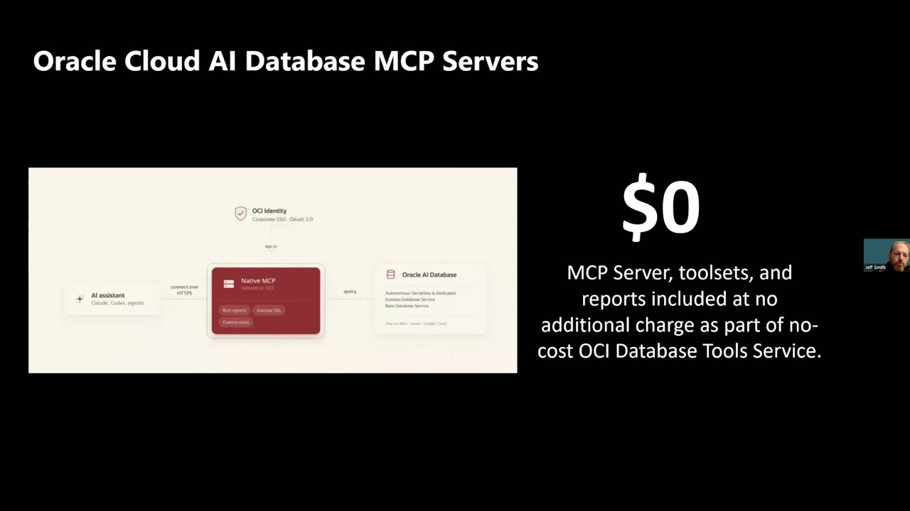
{kind=link}
{kind=link}
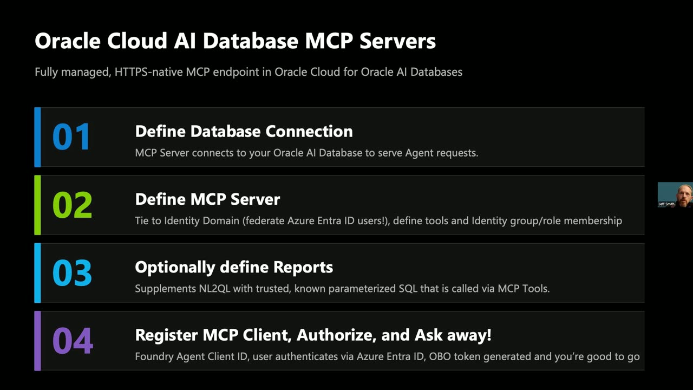
{kind=link}
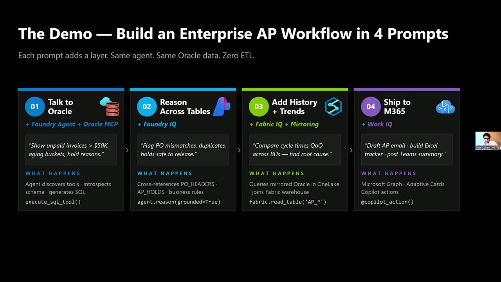
{kind=link}
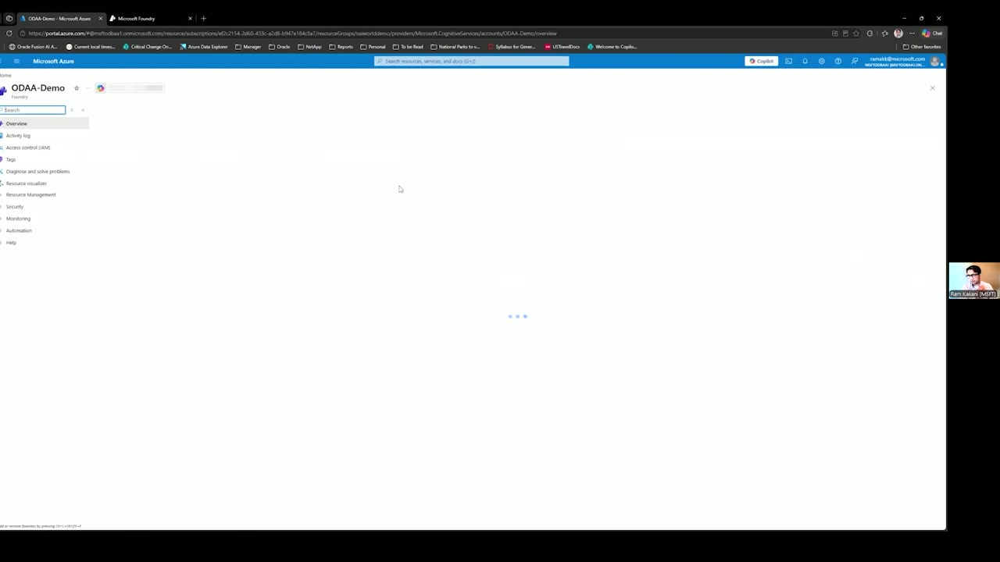
{kind=link}
{kind=link}
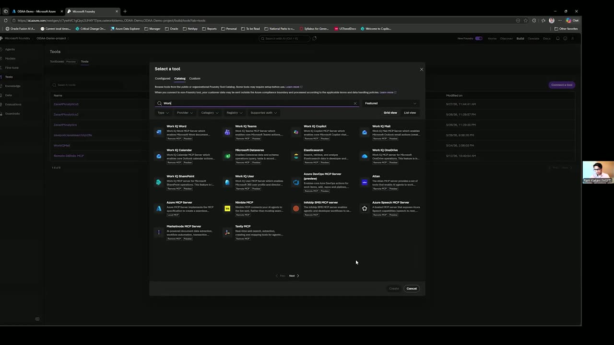
{kind=link}
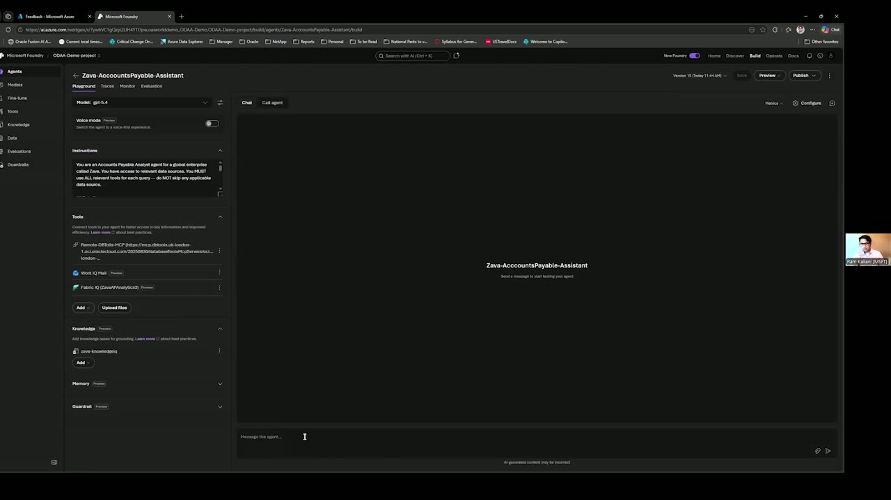
{kind=link}
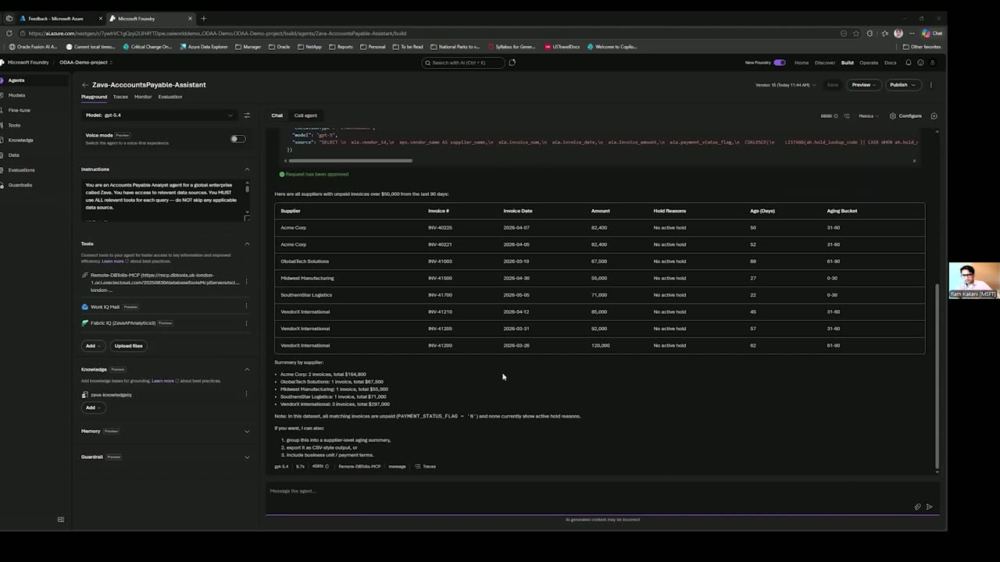
{kind=link}
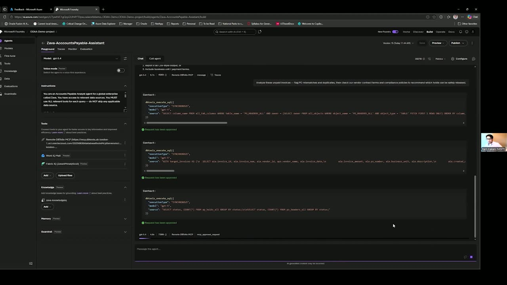
{kind=link}
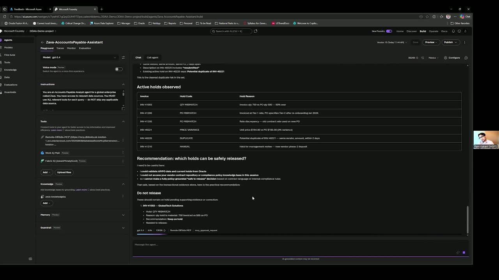
{kind=link}
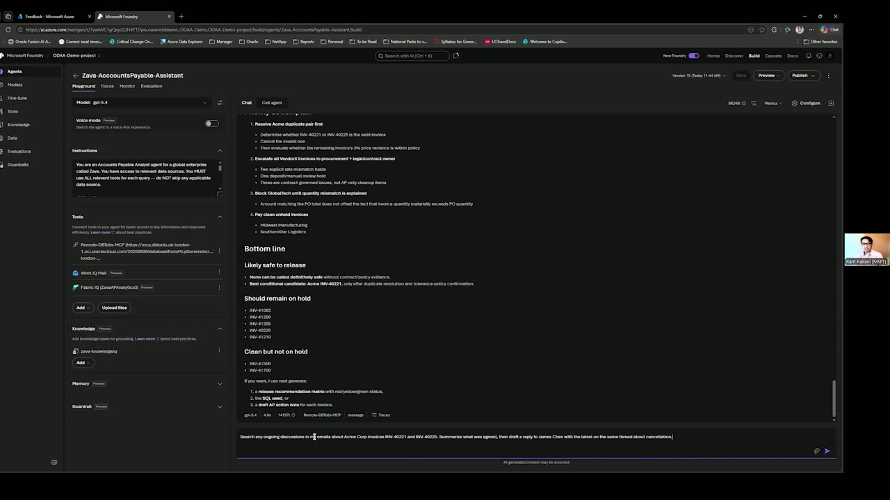
{kind=link}
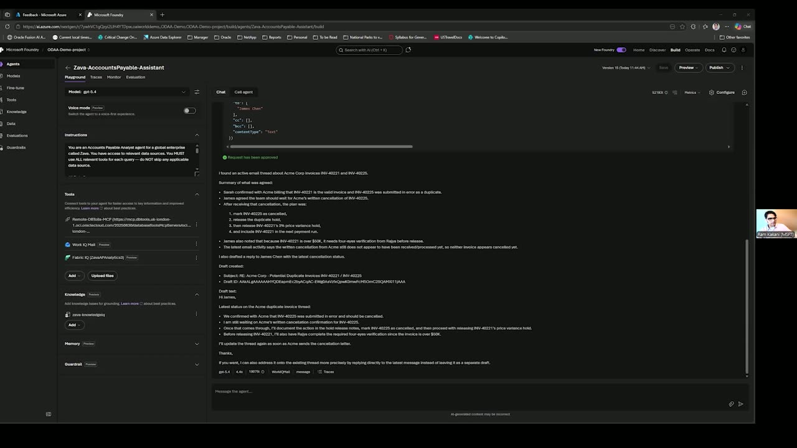
Transcript
Show / hide transcript (18,654 chars)
[00:00:00] JEFF SMITH: Hey, hello friends, colleagues, [00:00:02] and Azure community at Microsoft Build 2026. [00:00:05] My name is Jeff Smith. [00:00:07] I am a Product Manager at Oracle. [00:00:09] I'm so happy to be here today to share our AI story [00:00:13] and how we can make our Oracle Database useful [00:00:18] in serving your business so your data stored [00:00:21] in our databases goes very well with Microsoft's AI platform. [00:00:26] I'm joined here today by my colleague [00:00:28] at Microsoft, Ram Kakani. [00:00:30] Ram, why don't you introduce yourself? [00:00:33] RAM KAKANI: Hey, everyone. [00:00:33] Hope you guys are having fun at Build. [00:00:35] I'm Ram Kakani, a Product Manager at the Oracle Database [00:00:38] of Azure team in Microsoft. [00:00:40] JEFF SMITH: I cover MCP servers for the Oracle Database [00:00:43] at Oracle, so together we should be able to do some damage today. [00:00:48] Let's move to the next slide. [00:00:50] RAM KAKANI: Let's look at, basically, [00:00:52] how it all comes together. [00:00:54] As you can see here, you could build business-aware enterprise [00:00:58] agents that are AI ready with Oracle data. [00:01:02] There are four plates, as you can see, where you have AI [00:01:06] at the top, the dev surface, Azure AI Foundry, [00:01:10] Copilot Studio, GitHub Copilot, Pro Code [00:01:13] or Low Code, same runtime. [00:01:16] Below that is your intelligence layer, where you have Foundry IQ [00:01:22] for reasoning and grounding, [00:01:24] Fabric IQ for historical analytics, [00:01:27] and Work IQ to deliver this into your Outlook, Teams, Excel, [00:01:32] and also bring your work context. [00:01:35] Turn on what your scenario needs. [00:01:38] Then you have Oracle Atlas. [00:01:42] You'll see two patterns, Oracle MCP server for live reads, [00:01:46] Fabric Mirroring for historical or cross-source analytics [00:01:50] if you have more than one source of data, [00:01:53] and same agent code that runs either way. [00:01:57] Underneath all of that is the governance plane, not bolt-on. [00:02:02] Entra Agent ID gives every agent a first-class identity [00:02:06] with least-privilege scoping. [00:02:08] Agent 365 gives you [00:02:10] that tenant-wide inventory and governance. [00:02:13] Oracle data stays safe in Oracle. [00:02:17] That's enterprise ready. [00:02:19] Let's see now how it all comes together [00:02:21] and let's see what the dev stack looks like. [00:02:24] Four pieces of the dev stack, if you will. [00:02:27] One is a Foundry Agent Service that hosts agents [00:02:29] and the MCP client that provides you a native MCP support [00:02:34] and points to any MCP server, in this case, Oracle MCP server. [00:02:40] The next one is the GitHub Copilot or Copilot Studio, [00:02:43] depending on your choice, Pro Code versus Low Code. [00:02:46] All of that, as we said, [00:02:48] is governed by the Microsoft Entra Agent ID [00:02:51] and Agent 365 Governance. [00:02:54] As you can see, just a few pieces of code [00:02:57] that will take you live with an agent. [00:03:00] Let's see now. [00:03:01] Jeff will take you through the MCP server. [00:03:04] JEFF SMITH: Thanks. [00:03:05] MCP, so Model Context Protocol, really came onto the scene [00:03:10] in late 2024 and caught on like wildfire all throughout 2025. [00:03:17] We had MCP servers for Oracle AI Database since July, [00:03:22] and now for cloud, both in our cloud [00:03:26] at Oracle Cloud Infrastructure and for Oracle Databases running [00:03:29] at Azure, we offer managed, hosted MCP servers native [00:03:37] into our cloud environments. [00:03:40] As a customer or a partner, you can come in [00:03:44] and just define the characteristics [00:03:45] of the MCP server, what tools you want to be made available, [00:03:50] how the authentication is going to work, and we run that for you [00:03:54] at no additional cost. [00:03:57] The only thing you're going to be paying [00:03:58] for is using your database or using the AI tooling. [00:04:04] The MCP server itself is no cost. [00:04:08] The steps that you're going to need to do to set [00:04:11] up the connectivity between the various Azure IQ pieces [00:04:17] and the actual data in your database, [00:04:20] we're going to start off with the database connection. [00:04:23] Just like anytime you're working with any database, [00:04:25] you generally provide a set of credentials, [00:04:27] and it's these credentials that basically shape the view [00:04:31] of the data that the AI will see, [00:04:34] so you can use a proxy user that's tied [00:04:38] to your identity domain, and that can be used [00:04:41] to determine what type of data you can see in the tables [00:04:44] or whether the tables are even visible at all. [00:04:47] Once you have the connection defined, you can go ahead [00:04:50] and create the MCP server, and you're going to point it [00:04:53] to the identity domain, and this is where you're going [00:04:56] to have your Azure Entra ID users defined. [00:04:59] Then let's say Ram has an account. [00:05:03] I'm going to add him to an MCP server group. [00:05:05] That will give him privileges to connect to and talk [00:05:09] to our MCP server using his existing Azure Entra ID login. [00:05:15] At that point, I'm going to define the MCP tools. [00:05:19] Tools are sort of the APIs that allow clients for the MCP [00:05:26] or the agents that are speaking MCP protocol to our server. [00:05:30] This is where they can request things to be done [00:05:32] on their behalf, and probably the most well-known pattern is [00:05:36] natural language to SQL. [00:05:38] Ram, in his demo, I think is probably going [00:05:39] to say something like, "Hey, Mr. AI Wizard, [00:05:43] show me how many widgets we sold last week." [00:05:47] The LLM will translate that into a query statement [00:05:51] that our database will understand, and it'll submit [00:05:53] that query to be ran through our MCP tool. [00:05:56] Before you can do that though, [00:05:58] we're going to register the agent as an MCP client, [00:06:02] and that's what allows the OAuth 2 workflow to work. [00:06:05] The first time you'll go to do this, [00:06:07] which we probably won't show in the demo because it's kind [00:06:09] of boring, but Ram would log in. [00:06:12] We would verify the Azure Entra ID credentials. [00:06:16] He'll be asked for permission [00:06:18] to grant the agent to act on his behalf. [00:06:22] It's called an OBO token. [00:06:24] Then at that point, the agent can go grab an access token [00:06:28] using the OAuth 2 workflow, [00:06:30] and you never see the login stuff ever again. [00:06:33] As long as Ram's identity has the group membership required [00:06:37] to interact with the resources on the Oracle side, [00:06:39] our MCP server and the database, good to go to ask questions. [00:06:44] The nice thing is we will propagate Ram's identity [00:06:49] in the database itself, so Ram could be using an agent talking [00:06:53] to an Oracle database via AI, [00:06:56] and the Oracle database will see Ram as himself. [00:07:00] They'll see Ram's Azure Entra ID user, so in the security side, [00:07:07] we can set up all of the very fancy Oracle security rules. [00:07:11] RAM KAKANI: Here's a problem statement. [00:07:12] An APEX team has asked a developer, the invoice volume is [00:07:18] up 30% on flat headcount, cycle times past 45 days, [00:07:24] and data sitting in Oracle database, and dashboards. [00:07:27] Tell them what happened. [00:07:29] They need an agent that moves the work. [00:07:32] The budget that they have is weeks, not quarters, but weeks. [00:07:37] Let's see how we solve it, right? [00:07:38] The same agent, same Oracle data, zero ETL, [00:07:42] built in Foundry, wired with Foundry IQ and Work IQ, [00:07:47] talking to Oracle database through Oracle MCP server. [00:07:51] I'll start with my Azure portal. [00:07:54] Here is my Oracle database at Azure. [00:07:55] As you can see, there are slew of database services [00:07:58] that Oracle offers through Azure portal, [00:08:00] natively integrated Autonomous AI Database, Exadata Database, [00:08:04] Exadata Database on exascale infrastructure, [00:08:08] Base Database service, and GoldenGate. [00:08:11] For this demo purposes, we have our supply chain data hosted [00:08:15] in Exadata Database, and in this VM cluster in UK South. [00:08:24] As you can see, the cluster is provisioned in the VNet [00:08:26] and subnet in your virtual network. [00:08:30] Now, here is Foundry, where I'll go build an agent. [00:08:40] Clicking on here will take you to Foundry portal. [00:08:43] We've already got that opened. [00:08:44] Here is my Foundry portal. [00:08:46] I'll go to "Build." [00:08:50] Now, you can technically go create an agent [00:08:53] from scratch here, give it a name, and continue [00:08:56] through that self-serve. [00:08:59] I'll just go take -- for the time, let's go look [00:09:02] at an agent that I already built. [00:09:04] Here is an example agent [00:09:08] where you have an account payable analyst agent, [00:09:10] for example, that is actually responsible to provide all [00:09:14] of the insights for the AP. [00:09:18] Now, you can see the remote MCP server that's already [00:09:22] pre-provisioned and is connected into the tools. [00:09:26] Let me also show you how do we do that. [00:09:31] You could go "Create Tools," and in this, [00:09:35] you could connect a tool. [00:09:38] From the catalog, quickly go look at Oracle. [00:09:43] You have Oracle Remote MCP Server. [00:09:46] You'll go create that. [00:09:49] You'll provide the remote MCP server endpoint, the parameters [00:09:52] for the region and the OCID, and the authentication, [00:09:56] as Jeff mentioned, can be key-based or OAuth-based, [00:10:01] and you'll just hit connect. [00:10:04] Here is a MCP server connection that's already connected here [00:10:08] in the tools. [00:10:09] You can see this MCP server is provisioned in UK South [00:10:12] with the connection ID [00:10:15] and is currently used in these two agents. [00:10:19] Now that we are here, let's also look [00:10:21] at other tools that we require. [00:10:23] One is basically the Foundry IQ and the Work IQ. [00:10:29] Here is our Work IQ that is connected to, again, [00:10:35] to the agent that we will demonstrate, [00:10:38] but same thing, right? [00:10:39] You go to tools, you connect a tool, you look for Work IQ here, [00:10:46] and all you have to do is -- [00:10:48] -- you'll use the Work IQ email MCP server. [00:11:08] Now, let's go look at our agent. [00:11:11] Here is an agent that is responsible [00:11:15] for our fictitious company, our Zava entity, and as you can see, [00:11:20] it's connected to the remote MCP server for -- [00:11:22] the connected to the Oracle database. [00:11:25] The Work IQ email is already configured as well [00:11:28] as the Fabric IQ for historical trends. [00:11:31] Then for the knowledge base, you have, [00:11:34] it basically has Zava Knowledge IQ [00:11:37] that is created here in the knowledge. [00:11:43] If you can look at this, [00:11:46] you have both the compliance reports here that are stored [00:11:50] in Microsoft OneLake and the vendor policies [00:11:53] and our documents, contractual documents, that are stored [00:11:58] in Azure Blob Storage, which will be used [00:12:00] as our knowledge sources that will power this knowledge base [00:12:04] and that will power the Zava agent. [00:12:08] Let's go look at our agent in action. [00:12:12] Now, the first one that I'm going to ask the agent is [00:12:18] to show the last 90 days' worth of invoices that are unpaid [00:12:25] and are over 50,000 and include the reasons in each. [00:12:30] Give us a consent. [00:12:32] It authenticated, now you'll see that the agent is connecting [00:12:48] to the MCP server and will execute a bunch of queries [00:12:53] that are pre-populated for you to get the data. [00:13:03] As a developer, I used to write 50 lines of boilerplate code [00:13:06] in OCI SDK setup and connections to get this, but look at this, [00:13:11] the magic of MCP live. [00:13:32] Yep, so, as you can see, you'll see there are a few suppliers [00:13:38] which have unpaid invoices, over 50,000. [00:13:42] Acme Group. [00:13:43] has two and others have one each, [00:13:45] and Vendor X has three, right? [00:13:48] Now, what happened? [00:13:50] Let's go look at how these unpaid invoices are [00:13:58] and do they have any PO mismatches or any duplicates, [00:14:03] and which of them can be released [00:14:06] or which of them can be held? [00:14:09] That's my second prompt. [00:14:11] Here, you would see the Foundry IQ in action [00:14:16] where the agent is looking at the vendor agreements, [00:14:22] looking at the policies, compliance policies, [00:14:25] and is basically trying to analyze the delays [00:14:31] and along with the duplicates. [00:14:42] So you always need to approve each query, [00:14:46] the human in the loop basically validating that it is talking [00:14:50] to the right tables, getting the right data that is required [00:14:53] and it has the right authorization [00:14:55] and authentication. [00:14:57] JEFF SMITH: Thank you for saying that, Ram. [00:14:58] Just because this stuff is fast [00:14:59] and it looks good doesn't mean you can take your eyes off [00:15:02] or your hands off. [00:15:14] I like to tell people [00:15:14] that you're the actual pilot, not the Copilot. [00:15:19] RAM KAKANI: Good one. [00:15:20] I like that. [00:15:21] JEFF SMITH: I'll pretend that was original with that one. [00:15:26] RAM KAKANI: That's so true because the agent is talking [00:15:30] to your mission critical enterprise data residing [00:15:34] in Oracle databases, so you better be conscious [00:15:39] about what the agent is accessing, why is it accessing, [00:15:43] and what's the outcome of it? [00:15:53] All right. [00:15:56] It looks like the agent has retrieved the [00:16:01] right recommendations. [00:16:02] As you can see, it basically is reasoning over all [00:16:07] of the invoices and against the documents that are supplied [00:16:13] with the knowledge base [00:16:14] and is basically looking at a few invoices. [00:16:25] JEFF SMITH: That's awesome. [00:16:27] RAM KAKANI: All right. [00:16:28] Now you can see the best candidate for likely safe [00:16:33] to release is the Acme Group, [00:16:35] only after resolving the duplicate resolution. [00:16:38] Now, I can go ahead and cancel the duplicate payment [00:16:42] and let my AP head releases the order for Acme [00:16:50] or invoice for Acme Group. [00:16:52] What I'll do, I'll go ahead and put my Work IQ to work. [00:16:57] As you can see -- let me go ahead and use my third prompt. [00:17:03] Here's my third prompt. [00:17:04] What I'm saying is, hey, look at all my ongoing discussions [00:17:08] and emails about Acme Group for these specific invoices. [00:17:13] Summarize what was agreed and then draft a reply to James Chen [00:17:17] with the latest on the same thread about the cancellation. [00:17:31] The agent is now looking to search. [00:17:35] I'm approving the search parameters. [00:17:39] Again, it's trying to retrieve that message. [00:17:45] Additional search parameters with filters [00:17:49] to find the right conversation. [00:17:52] It'll then look for -- [00:17:53] -- creating that draft message. [00:18:06] There you see, it's basically created that draft message [00:18:12] where the Acme Group order was submitted in error [00:18:16] and basically you need to cancel [00:18:19] that duplicate and then release it. [00:18:22] This will generate a draft in your Outlook that's connected [00:18:27] that you can just go ahead and hit "Send" [00:18:29] after validating the right message. [00:18:32] Over to you, Jeff. [00:18:33] JEFF SMITH: I mean, that's the real magic. [00:18:34] It wrote the email for us, and it dealt [00:18:38] with the human stuff I'm not good at. [00:18:40] This is my first opportunity to speak [00:18:42] at this awesome event today, so I just want [00:18:44] to thank everyone watching for that opportunity. [00:18:48] I'm easy to find online. [00:18:50] You can just Google ThatJeffSmith if you want, [00:18:52] but I do want to leave you -- [00:18:54] or we do want to leave you some resources you can follow up on. [00:18:58] We have a community here on LinkedIn that specializes in all [00:19:03] of our friends running Oracle Database at Azure. [00:19:06] If you're looking for pricing or technical details, [00:19:11] you can follow the third link there. [00:19:14] There's QR codes. [00:19:16] I also want to invite you to work with us to set up a call. [00:19:21] Our engineers will happily show you how you can get your [00:19:28] traditional on-premises Oracle Databases running [00:19:32] in Oracle at Azure. [00:19:33] I would love for them to also help you set up our MCP servers [00:19:37] so you can get your agents working just [00:19:39] like Ram showed today. [00:19:41] RAM KAKANI: Thank you everyone.